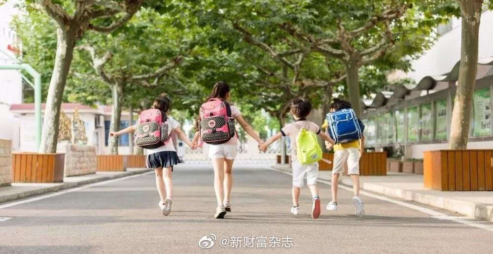

“再能跑些，再能战些，为了队友，为了家人，为了梦想！” 真的好。@澎湃新闻:【震撼！这是日本高中足球锦标赛】澎湃新闻的秒拍视频 日前，日本第98届全国高校足球选手权（日本高中足球锦标赛）大会应援曲走红网络，该曲由日本当红歌手三阪咲演唱。日本国脚长友佑都则担任了应援组组长，他寄语道，“再能跑些，再能战些，为了队友，为了家人，为了梦想！”（来源网络）震撼！这是日本高中足球锦标赛 682次播放 02:34
有时候晚上睡觉前会打开ps4玩几把实况。MC模式，跟人踢。以前踢输了就很郁闷。另外之前胜率高，更怕输，害怕胜率下来。后来想明白了。想明白以后，输了也不急。被人进一个也不急，两个更不急。每次被进球领先，重新开球心里都像刚开始0：0一样，心态极佳。不会在意已经几比几了，享受比赛，认真踢好下一脚。想明白什么了。想明白这是一场游戏。游戏而已。人生又何尝不是一场游戏。过去赢了输了，有什么所谓。重新开始。踢好每一脚，享受每一天。非常轻松。
回复@你看我_是男是女:医药当时96，目前32。我看不出有什么问题。//@你看我_是男是女:15000点的医药指数，也是醉了。对了，信息指数的pe这里看不到，我还是不想调坐标了，数值其实是186。。。186。。。金融依然不到最高。难道是等着牛市尾巴再补一刀？@ETF拯救世界 是不是验证了你的预言，牛尾补一刀。@ETF拯救世界:医药基金再突破，开始冲击四年高点
回复@渔樵耕读煮:不好意思，男的不陪//@渔樵耕读煮:这种人，如果你是男的，E大是不是还要陪睡你才满意？//@ETF拯救世界:回复@狂狮爱不可:要不你给我打赏一点，我每天什么都不干在网上陪你聊天好吗。我可以不可以有点自己的时间做自己的事。不就昨天出去忙没说话吗？@ETF拯救世界:医药基金再突破，开始冲击四年高点
回复@狂狮爱不可:要不你给我打赏一点，我每天什么都不干在网上陪你聊天好吗。我可以不可以有点自己的时间做自己的事。不就昨天出去忙没说话吗？//@狂狮爱不可:股市大涨，益达就出来了，为啥大跌的时候益达不这么频繁出来安慰一下我们。@ETF拯救世界:医药基金再突破，开始冲击四年高点
回复@我心永Young:要搁以前的政策，我连房都不用买，直接上西城的学校。现在我花了1000万买了房才能上，但我还是要说一声公平。这是对大多数人的公平，住哪里就上哪里的学校。像以前一样，你根本不知道好学校都是怎么上的。//@我心永Young:回复@土77豆:这是因为他已经买了学区房@新财富杂志:【既然要公平，何不#学区也摇号#？】有经济能力的家庭，通过购置一套高价学区房，就能占有城市更优质的教育资源，这大失社会教育资源的公平性。同时这也是导致高价学区房的主要原因。通过“全民摇号”的方法产生择校顺序，是当前不能实现城市教育资源均衡化的社会现实基础上，尽可能实现最大限度的公平，最大程度上剥离房产的学区属性的方法之一，甚至是唯一的方法。（来源：丁建刚房产）既然要公平，何不学区也摇号？
回复@明天就回火星啦:不可惜。还有去年年底要用钱赎回的。想想几个月之后的心情。现在卖，几年后也会比较难受。但是急用钱，没办法。//@明天就回火星啦:可惜了！@ETF拯救世界:这周去华东某地度周末。约吗。
严格就近上学，是我能想到最公平的方法。只要有别的口子，就一定会被有特权的人钻进去。绝对公平的世界不存在。@新财富杂志:【既然要公平，何不#学区也摇号#？】有经济能力的家庭，通过购置一套高价学区房，就能占有城市更优质的教育资源，这大失社会教育资源的公平性。同时这也是导致高价学区房的主要原因。通过“全民摇号”的方法产生择校顺序，是当前不能实现城市教育资源均衡化的社会现实基础上，尽可能实现最大限度的公平，最大程度上剥离房产的学区属性的方法之一，甚至是唯一的方法。（来源：丁建刚房产）既然要公平，何不学区也摇号？
回复@Karmen是好好孩子:缺钱当然是现在抛。不过这个事情再次提醒各位：权益类投资需要长期资金。哪怕少一点也没事，但是要长期。很重要。//@Karmen是好好孩子:老大，最近我要买房，缺钱，跟您买了两万多基金，近期什么时候可以抛？@ETF拯救世界:这周去华东某地度周末。约吗。
做好投资有一个比较珍贵的品质：等得起。不贵的地方买入，等。等好几年，噌噌噌涨上去。一年收割五年八年利润。卖出。等。等好几年，买入。继续等。再等几年，噌噌噌又涨上去。卖出。打字很简单，然而弹指一挥间。这期间每一个时刻都不容易。你得知道什么时候不贵，什么时候贵。等不及就买很贵，等得太久又买不到东西。等的过程也不容易，个中滋味大家都能体会。所以一方面调整策略，在等的过程中也有肉吃。另一方面调整心态。心态和策略相辅相成。对大多数人来说，玩好A股，大致也就如此了。
 澎湃新闻的秒拍视频 日前，日本第98届全国高校足球选手权（日本高中足球锦标赛）大会应援曲走红网络，该曲由日本当红歌手三阪咲演唱。日本国脚长友佑都则担任了应援组组长，他寄语道，“再能跑些，再能战些，为了队友，为了家人，为了梦想！”（来源网络）
澎湃新闻的秒拍视频 日前，日本第98届全国高校足球选手权（日本高中足球锦标赛）大会应援曲走红网络，该曲由日本当红歌手三阪咲演唱。日本国脚长友佑都则担任了应援组组长，他寄语道，“再能跑些，再能战些，为了队友，为了家人，为了梦想！”（来源网络） 震撼！这是日本高中足球锦标赛
震撼！这是日本高中足球锦标赛